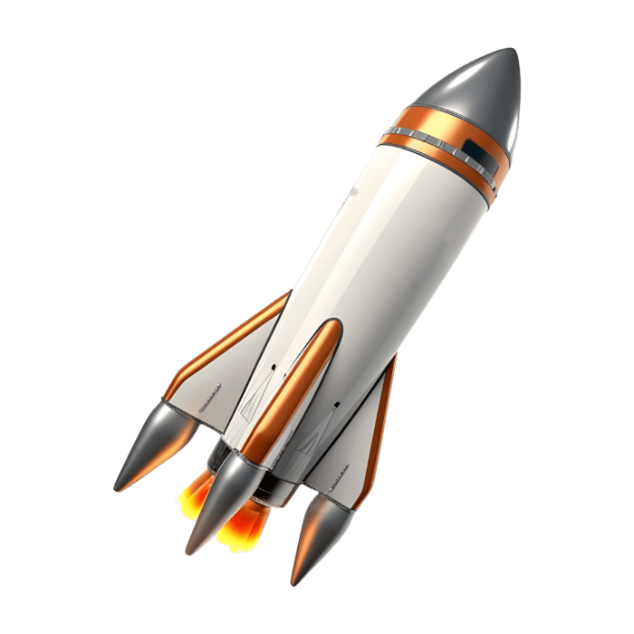
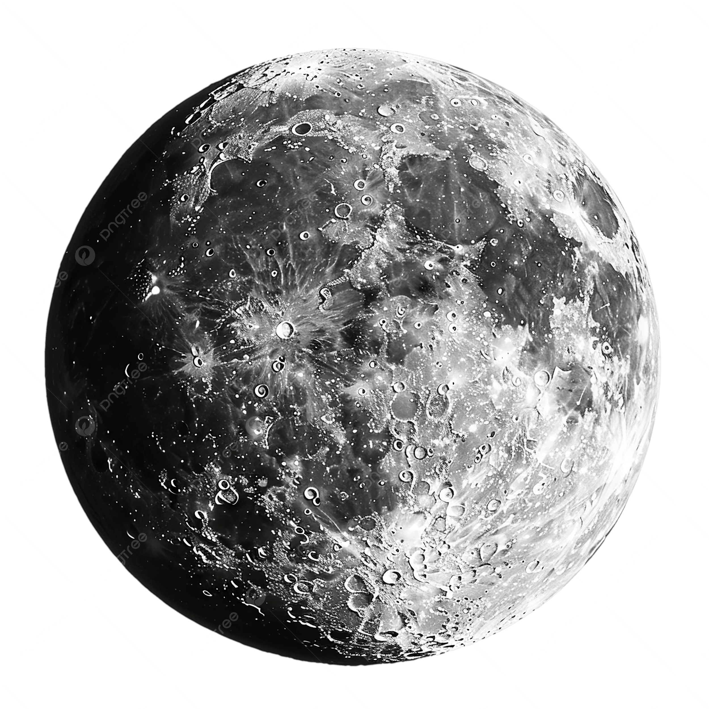
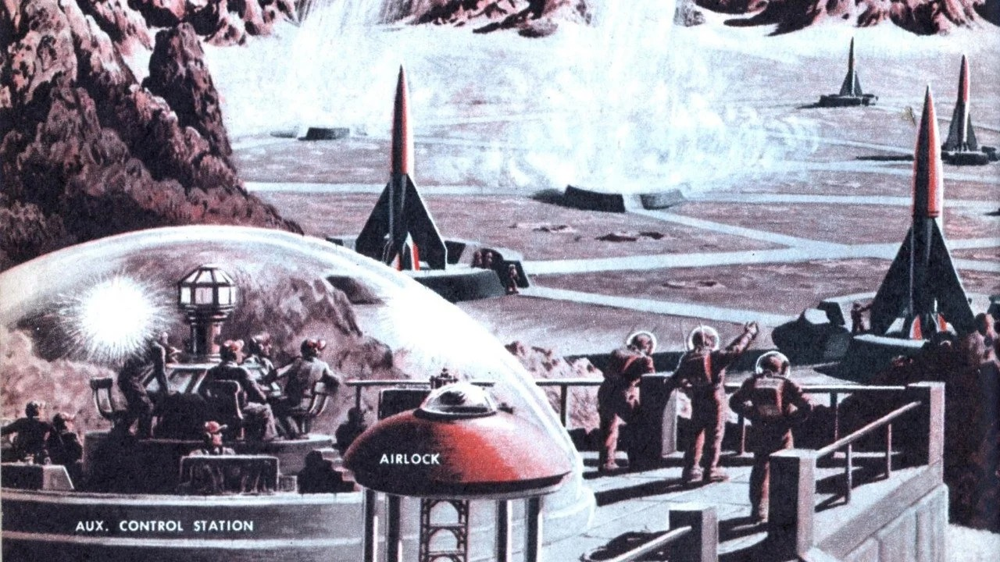
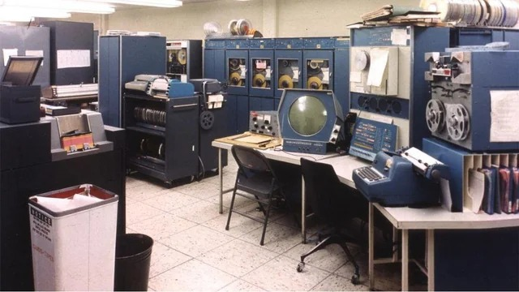
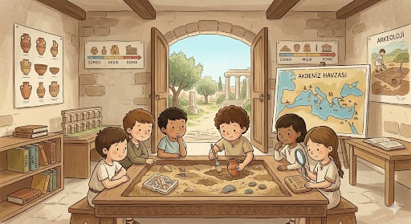
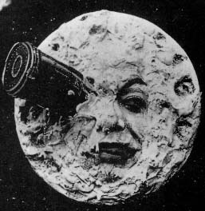
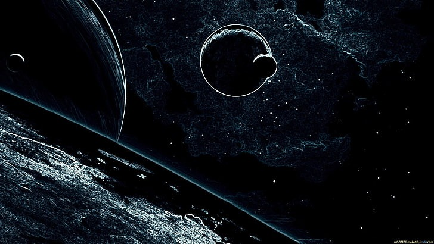

Ay'a gitme vizyonu olmasaydı, bugün hayatımızın merkezinde olan pek çok teknolojiden mahrum kalacaktık...
Ay yarışı bir sonuca bağlanmasaydı, Soğuk Savaş’ın o gergin atmosferi asla yumuşamazdı. ABD ve Sovyetler Birliği, teknolojik üstünlüğü kanıtlayacak "nihai bir zafer" kazanamadığı için askeri harcamalar katlanarak artmaya devam ederdi. Bu durum, dünya siyasetini bugün bile iki kutuplu, sert sınırlara sahip ve her an çatışmaya hazır bir gerilim hattında tutabilirdi.

Eğer 1969’da o efsanevi adım atılmasaydı, bugün içinde yaşadığımız modern dünya tam anlamıyla bir "teknolojik rötar" yaşıyor olurdu. Ay kapsülüne sığması gereken devasa bilgisayarları küçültme zorunluluğu doğmayacağı için mikroçip devrimi on yıllarca gecikir, cebimizdeki akıllı telefonlar yerine oda büyüklüğünde hantal makinelere mahkûm kalırdık. Astronotların uzay yürüyüşü için hayati olan kablosuz iletişim ve dayanıklı batarya ihtiyacı karşılanmasaydı; Wi-Fi, Bluetooth ve şarjlı ev aletleri gibi gündelik konforlar hayatımıza hiç girmeyebilirdi. Ay yüzeyini haritalamak için geliştirilen dijital sinyal işleme teknolojisi eksik kalsaydı, bugün tıpta hayat kurtaran MRI ve tomografi cihazları bu kadar hassas olamaz, sağlığımız gökyüzüne bakmadığımız için yeryüzünde karanlıkta kalırdı.

Ay’a gitmek, binlerce imkansız denklemi sıfırdan çözmek demekti; NASA’nın bu hesaplamaları yapacak devasa bir beyin gücüne ihtiyaç duyması, dünyadaki fen ve matematik eğitiminde (STEM) ani bir devrim yarattı. Eğer o büyük "başarı mucizesi" yaşanmasaydı, okullardaki müfredatlar bu kadar bilim odaklı gelişmez ve milyonlarca genç mühendislik yerine daha sıradan alanlara yönelirdi. Üniversiteler uzay araştırmalarının getirdiği devasa Ar-Ge fonlarından mahrum kalır, bugün tıp ve yapay zekada devrim yaratan dahi beyinler ilham alacakları bir hedef bulamazdı. Sonuçta; Ay yolculuğu olmasaydı, modern bilim dünyası sınırlarını zorlamak yerine yerinde sayan, statik bir yapıda hapsolurdu.

Bilim kurgu edebiyatı ve sineması, Ay’a gidişin verdiği o muazzam ilham sayesinde altın çağını yaşadı ve hayal gücümüzü tetikledi. Eğer insanlı bir başarı hikayesi olmasaydı, bu türdeki eserler hep bir "imkansızlık" ve karamsarlık teması etrafında dönerdi. Uzay, keşfedilecek bir macera alanı değil, sadece korkulacak ve ulaşılamayacak bir karanlık olarak tasvir edilirdi. Bugün hayranlıkla izlediğimiz pek çok kült film ve okuduğumuz romanlar, o gerçek kanıtın eksikliğinde muhtemelen hiç yazılmayacaktı. Geleceğe dair umutlu hayaller kurmak yerine, hep kendi yerçekimimize hapsolmuş hikayeler anlatırdık.

Ay bizim için derin uzaya açılan tek gerçek kapı ve bir nevi acemilik dönemimizin en büyük sınavıydı. Eğer bu basamağı çıkmasaydık, bugün Mars’a gitmeyi veya başka gezegenlerde yaşam kurmayı hayal bile edemez, sadece filmlerde izlerdik. Ay’da elde ettiğimiz tecrübeler, insanlı uzay uçuşlarının güvenli limanı ve en büyük laboratuvarı oldu. Oraya gitmemeyi seçmek, aslında yıldızlara giden yolu en başından mühürlemek ve evrenin geri kalanına sırtımızı dönmek demekti. Kendi uydusuna ulaşamayan bir türün, galaksiye dair tüm hayalleri sadece çocuk masalları olarak kalırdı.

1. "Donmuş Savaş" senaryosuna göre, Ay yarışı bir "nihai zaferle" sonuçlanmasaydı dünya siyaseti bugün nasıl bir durumda olurdu?
2. "Dijital Rötar" bölümünde bahsedilen; Wi-Fi, Bluetooth ve şarjlı ev aletleri gibi konforlarımızı borçlu olduğumuz asıl ihtiyaç nedir?
3. "Akademik Boşluk" başlığına göre, Ay yolculuğu gerçekleşmeseydi milyonlarca genç mühendisin kariyer yolculuğu nasıl değişirdi?
4. "Mühürlü Kapı" analojisinde kullanılan "kendi uydusuna ulaşamayan bir tür" ifadesiyle anlatılmak istenen asıl risk nedir?